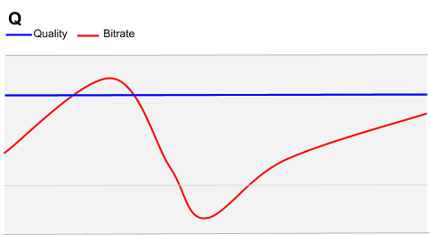
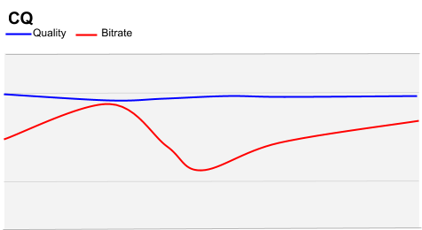
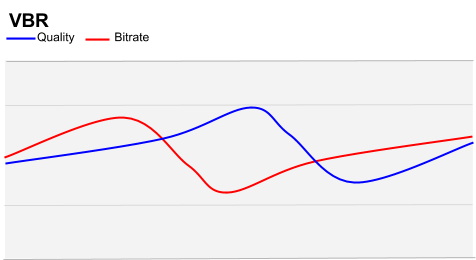
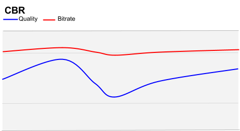

Created Monday 21 January 2019
Constant Quantizer (Q) Allows you to specify a fixed quantizer value; bitrate will vary
Constrained Quality (CQ) Allows you to set a maximum quality level. Quality may vary within bitrate parameters
Variable Bitrate (VBR) Balances quality and bitrate over time within constraints on bitrate
Constant Bitrate (CBR) Attempts to keep the bitrate fairly constant while quality varies

Constant Quantizer mode requires minimal configuration. As its name suggests, Q mode is focussed on maintaining the quantizer at a target "quality" level, and allowing the quantizer to determine the flow of data that it wishes to process. All that the user need define is the target quality.
There is more information on specifics of target quality from an image processing focus (not a bitrate focus) in the Basic Encoding article.
Use the following FFmpeg command-line parameters for Q mode bitrate optimization:
ffmpeg
-b:v 0 By marking the video bitrate as 0 we explicitly set "Q" mode
-g <arg> Sets Keyframe Interval in frames (defaults to 240)
-crf <arg> Sets maximum quality level. Valid values are 0-63. Lower numbers are higher quality
-quality good -speed 0 Default and recommended for most applications. best is more of a research tool, with marginal improvement over -quality good -speed 0
-lossless Lossless mode
The first example is a very extreme Q mode setting and is provided for illustration only. (Even processing the 120 second clip in these examples will take several hours, and the output file produced is typically much larger than the original source.)
ffmpeg -i 120s_tears_of_steel_1080p.webm -c:v vp9 -g 1 -b:v 0 -crf 0 -quality good \
-speed 0 -lossless 1 -c:a libvorbis Q_g_1_crf_0_120s_tears_of_steel_1080p.webm.webm
To compare the effect of -crf, the following examples vary only -crf. Note that -g is not defined, so will default to 240, and in practice -crf defaults to 10, so we would have had the same result without including either parameter in the second of the three examples:
ffmpeg -i 120s_tears_of_steel_1080p.webm -c:v vp9 -b:v 0 -crf 0 -quality good \
-speed 0 -c:a libvorbis Q_crf_0_120s_tears_of_steel_1080p.webm
ffmpeg -i 120s_tears_of_steel_1080p.webm -c:v vp9 -b:v 0 -crf 10 -quality good \
-speed 0 -c:a libvorbis Q_crf_10_120s_tears_of_steel_1080p.webm
ffmpeg -i 120s_tears_of_steel_1080p.webm -c:v vp9 -b:v 0 -crf 63 -quality good \
-speed 0 -c:a libvorbis Q_crf_63_120s_tears_of_steel_1080p.webm
The output of these examples differs in size on disk. With -crf set to 0 the file was 711.8MB, with -crf set to 10 the file size was 125.3MB, and with -crf set to 63 the file was 4.5MB. In very simple terms this highlights that we have reduced the quality of the resulting VP9-encoded file by raising the value of the -crf argument. A full summary of all output files is in the Table of Results below.
Let us now compare the effect of varying the -g setting.
ffmpeg -i 120s_tears_of_steel_1080p.webm -c:v vp9 -g 1 -b:v 0 -quality good \
-speed 0 -c:a libvorbis Q_g_1_120s_tears_of_steel_1080p.webm
ffmpeg -i 120s_tears_of_steel_1080p.webm -c:v vp9 -g 240 -b:v 0 -quality good \
-speed 0 -c:a libvorbis Q_g_240_120s_tears_of_steel_1080p.webm
ffmpeg -i 120s_tears_of_steel_1080p.webm -c:v vp9 -g 480 -b:v 0 -quality good \
-speed 0 -c:a libvorbis Q_g_480_120s_tears_of_steel_1080p.webm
We notice that the -g 1 setting produces a very large file, 25.9MB in size. Compare this to changing -g 240 (explicitly setting the same as the default) where we end up with a 4.5MB file, and -g 480 where we end up with a 4.4MB file.
CQ is a recommended mode for file-based video.

For most content types, we recommend using constrained quality (CQ) mode, with bitrate caps. Most videos contain a mix of high-motion scenes (e.g., action sequences) and scenes with less detail (e.g., conversations). CQ mode allows the encoder to maintain a reasonable quality level during longer, easier scenes (without wasting bits), while allocating more bits for difficult sequences.
Nonetheless we must still constrain the process by providing an upper range -- otherwise there may as well be no compression at all! We can also set a lower range, where even if the image is black and the encoding process has almost nothing to do we will still throughput that data, perhaps less efficiently than we could, but with the end result that even the black is not significantly compressed and look "very black".
In addition we must also set the quantizer threshold. In VP9 the quantizer threshold can be varied from 0 down to 63.
The following FFmpeg command-line parameters are used for CQ mode:
ffmpeg
-b:v <arg> Sets target bitrate (e.g. 500k)
-minrate <arg>
-maxrate <arg> Sets minimum and maximum bitrate.
-crf <arg> Sets maximum quality level. Valid values are 0 to 63, lower numbers are higher quality.
The first example provides a reasonably wide constraint. Compared to the examples given above for Q, however, we find that this forces the bitrates into a higher range and the output quality is notably higher. File size is notably larger.
ffmpeg -i 120s_tears_of_steel_1080p.webm -c:v vp9 -b:v 2000k \
-minrate 1000k -maxrate 4000k -crf 10 -c:a libvorbis \
CQ_4000_1000_crf_10_120s_tears_of_steel_1080p.webm
The output file in this instance was 20.2MB on disk -- noticeably smaller than the Q mode encode in the examples above.
In contrast for the next example we have constrained the bitrate to a much more closely-defined range.
ffmpeg -i 120s_tears_of_steel_1080p.webm -c:v vp9 -b:v 2000k \
-minrate 1500k -maxrate 2500k -crf 10 -c:a libvorbis \
CQ_2500_1500_crf_10_120s_tears_of_steel_1080p.webm
In this instance the output file size was 24.1MB, and at times of high complexity and motion the video quality is visibly reduced when compared to the previous example.
ffmpeg -i 120s_tears_of_steel_1080p.webm -c:v vp9 -b:v 1000k \
-minrate 750k -maxrate 1400k -crf 10 -c:a libvorbis \
CQ_1400_750_crf_10_120s_tears_of_steel_1080pp.webm
In this final example, the output was significantly reduced in size, dropping to 13.2MB on disk.
Variable bitrate mode (VBR) is recommended for streaming video-on-demand files of high-motion content (for example sports). It is well suited to HTTP-based delivery.

In a VBR model, action scenes may be encoded with a higher bitrate than "easier" scenes, which are consistent with the keyframe.
For large streaming delivery models, VBR benefits can add up significantly in both distribution and infrastructure terms. When many VBR streams are being delivered by the same infrastructure, this can provide benefits to all viewers using the system.
VP9 VBR is also recommended for encoding sports and other content with high motion. For such high-complexity content, VBR achieves higher quality during periods of lower motion.
The following FFmpeg command-line parameters are used for VBR mode:
ffmpeg
-quality good If this is present then FFmpeg will take into account the subsequent -speed setting
-speed <arg> For VIDEO ON DEMAND Valid values are 0-4, with 0 being the highest quality and 4 being the lowest. (For Live streaming the range is 5-8 - See CBR below)
ffmpeg -i 120s_tears_of_steel_1080p.webm -c:v vp9 -b:v 2000k \
-minrate 1500k -maxrate 2500k -quality good -speed 0 -c:a libvorbis \
VBR_good_0_120s_tears_of_steel_1080p.webm
ffmpeg -i 120s_tears_of_steel_1080p.webm -c:v vp9 -b:v 2000k \
-minrate 1500k -maxrate 2500k -quality good -speed 5 -c:a libvorbis \
VBR_good_5_120s_tears_of_steel_1080p.webm
ffmpeg -i 120s_tears_of_steel_1080p.webm -c:v vp9 -b:v 2000k \
-minrate 1500k -maxrate 2500k -quality good -speed 8 -c:a libvorbis \
VBR_good_8_120s_tears_of_steel_1080pp.webm
Constant Bitrate mode (CBR) is recommended for live streaming with VP9.

CBR essentially sets the upper bitrate as a "hard ceiling". This means that the encoding process cannot produce data at a rate that the network cannot carry.
For example, for real-time communication (video conferencing) streams it is important that the encoding application does not flood the network with more data than it can carry. If it does, audio/video sync issues or frozen frames significantly affect user experience, more so than reduced compression efficiency. By ensuring the hard ceiling is defined, VP9 will reduce quality as that ceiling is reached.
The following FFmpeg command-line parameters are used for CBR mode:
ffmpeg
-quality realtime If this is present then FFmpeg will take into account the subsequent -speed setting
-speed <arg> For live streaming Valid values are 5 to 8, with 5 being the highest quality and 8 being the lowest. (For Video On Demand these are 0 to 4. See VBR above.)
-minrate <arg>
-maxrate <arg> Sets minimum and maximum bitrate These must be set to the same -b:v bitrate value for CBR mode .
In very simple terms we fix the target, minimum and maximum bitrates to the same value, and tell the quantizer that the operations are time-sensitive.
The examples below explore setting the bitrate to 2Mbps and 500kbps targets:
ffmpeg -i 120s_tears_of_steel_1080p.webm -c:v vp9 -b:v 2000k \
-minrate 2000k -maxrate 2000k -quality realtime -speed 0 -c:a libvorbis \
CBR_2000_realtime_0_120s_tears_of_steel_1080p.webm
ffmpeg -i 120s_tears_of_steel_1080p.webm -c:v vp9 -b:v 2000k \
-minrate 2000k -maxrate 2000k -quality realtime -speed 5 -c:a libvorbis \
CBR_2000_realtime_5_120s_tears_of_steel_1080p.webm
ffmpeg -i 120s_tears_of_steel_1080p.webm -c:v vp9 -b:v 2000k \
-minrate 2000k -maxrate 2000k -quality realtime -speed 8 -c:a libvorbis \
CBR_2000_realtime__8_120s_tears_of_steel_1080p.webm
ffmpeg -i 120s_tears_of_steel_1080p.webm -c:v vp9 -b:v 500k \
-minrate 500k -maxrate 500k -quality realtime -speed 0 -c:a libvorbis \
CBR_500_realtime__0_120s_tears_of_steel_1080p.webm
ffmpeg -i 120s_tears_of_steel_1080p.webm -c:v vp9 -b:v 500k \
-minrate 500k -maxrate 500k -quality realtime -speed 5 -c:a libvorbis \
CBR_500_realtime_5_120s_tears_of_steel_1080p.webm
ffmpeg -i 120s_tears_of_steel_1080p.webm -c:v vp9 -b:v 500k \
-minrate 500k -maxrate 500k -quality realtime -speed 8 -c:a libvorbis \
CBR_500_realtime_8_120s_tears_of_steel_1080p.webm